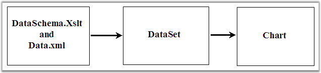

There is no built-in support in chart for importing data from an XML file. But given a corresponding XSLT file, the xml data can be converted into a DataSet, which can then be bound to the chart easily. This is illustrated in the following sample that is distributed with the installation:

Figure 283: Importing data from XML to Chart